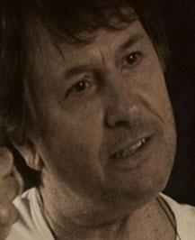

בהשתתפות
שלמה בר שביט ז"ל גילה אלמגור עודד קוטלר דורית בר-און לוטוף נוסאייר
אילן רוזנפלד
לוטוף נוסאייר
אילן רוזנפלד
קיקרו הפקות
בשיתוף לב סרטים, אופוס הפקות ופרלייט מציגים:
לוטוף נוסאייר
אילן רוזנפלד
בשנת 2008 ביום העצמאות של מדינת ישראל יצאתי לצלם סרט.
סרט שיצא לדרך ללא תקציב, במימון פרטי, עם הרבה עזרה מחברים טובים ושחקנים מוכשרים להפליא, שהתגייסו למשימה, ונרתמו כמעט בחינם.
התסריט נתפס כהזוי, מופרך, ואולי קצת חולני.. לתאר את ישראל בשנת המאה שלה, שנת 2048.
הז'אנר התבסס על מה שאנחנו מכירים כסרטי עדויות.. סיפורם של "השורדים". כמו שאתם מבינים, זה לא היה תסריט
אופטימי.
היו שאמרו לי שאני חולה נפש, עוכר ישראל, (במילה שמאלני דווקא לא השתמשו אז) המליצו לי על אשפוז מרצון... יאללה,
שיהיה...
חבר אחד של אבי, ניתק איתו קשר. בינינו, גם אבי היקר והאהוב, שאל "למה היית צריך את זה?
היום 15 שנה מאוחר יותר, אני מעלה את הסרט לראשונה לרשת האינטרנט. פתוח לצפייה בחינם לעיני כל החפץ.
על רקע מה שקורה בישראל היום יכול להיות שדווקא כן הייתי אופטימי.
אז הנה הוא לפניכם. "2048" סרט קצר, קצת יותר מ 40 דקות. תנו לעצמכם לשקוע.
נראה לי שהמציאות המתוארת בסרט הרבה יותר קרובה למה שמי מאתנו האמין בזמנו.
הקדים את זמנו תאמרו? אני מקווה שלא.